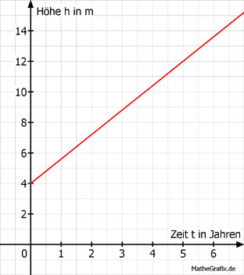

Lineare Funktionen Aufgabe 105 Birken wachsen 1,6 m pro Jahr. a) 2008 ist eine 4 m hohe Birke gepflanzt worden. In welchem Jahr ist sie 14 m hoch? b) Wie hoch ist sie nach 20 Jahren? a) Die Funktion der Höhe h abhängig von der Zeit t lautet: h = 1,6 * t + 4  14 = 1,6 * t + 4 | -4 10 = 1,6 * t | :1,6 t = 6,25 Jahre ---> 2014 b) H(20) = 1,6 * 20 + 4 H(20) = 36 m